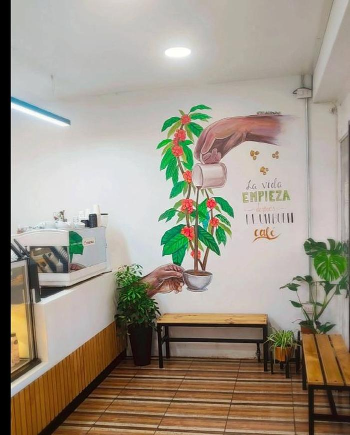
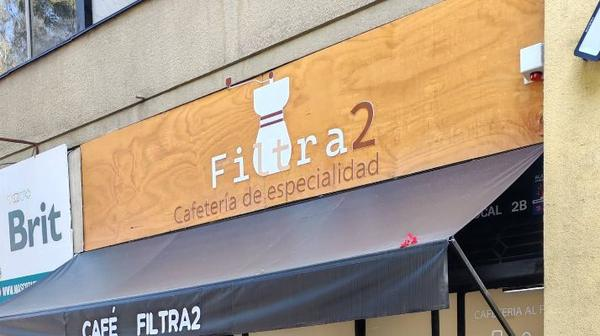
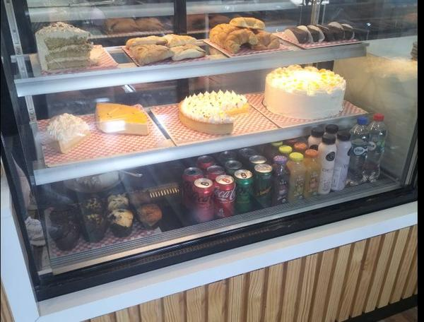
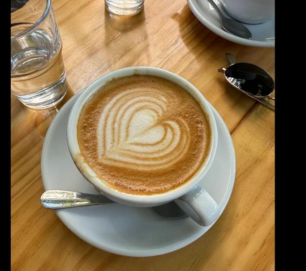
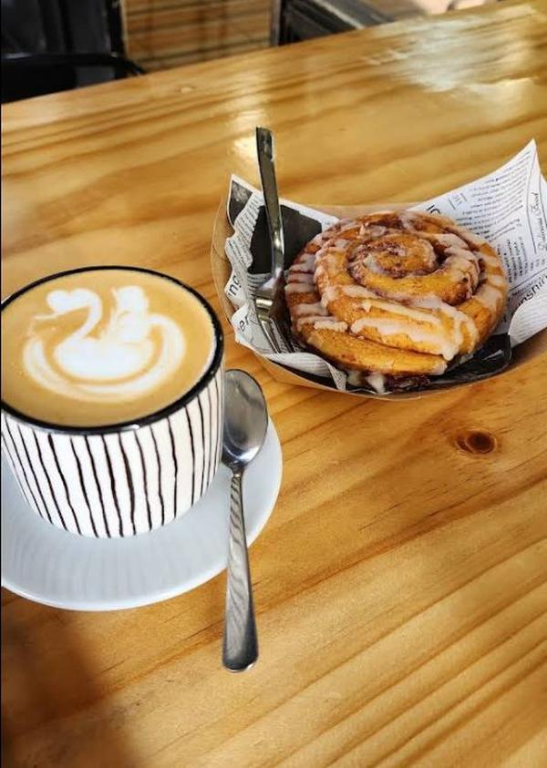
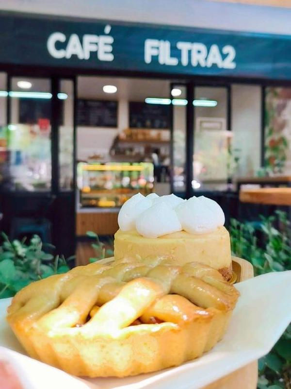

★★★★★
"Llegué con un libro y mis exámenes para revisar bajo el brazo y salí con ganas de volver. Hay cafés que simplemente lo tienen todo en orden, y Filtra2 es uno de esos."

Café de especialidad con orígenes seleccionados, pastelería, bollería y desayunos en Santiago Centro. Comunidad, buena onda y momentos.
En Filtra2 el café se trata en serio: orígenes seleccionados y varios métodos de preparación, acompañados de pastelería y sandwiches frescos. Un rincón pensado para quedarte a trabajar, conversar o simplemente tomarte tu tiempo.


"Llegué con un libro y mis exámenes para revisar bajo el brazo y salí con ganas de volver. Hay cafés que simplemente lo tienen todo en orden, y Filtra2 es uno de esos."
"Encontramos esta cafetería de casualidad y nos llevamos una rica sorpresa. Todo lo que pedimos estaba realmente bueno, auténtico, fresco y preparado a conciencia."
@cafefiltra2
2.124 seguidores · Café de especialidad
☕✨ Café de especialidad
🌍 Orígenes seleccionados
🍰 Pastelería, bollería y desayunos
🤝 Comunidad, buena onda & momentos



Sus destacadas de Instagram incluyen Horarios, Carta, Ubicación, Filtrados, Comunidad y Bebidas Frías — revísalas en @cafefiltra2.
Portugal 87, Local 2B, Santiago Centro
Por ahora los pedidos se coordinan directo en el local o por Instagram — no hay pedidos en línea todavía.